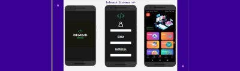
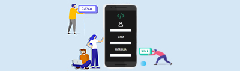

Clique sobre as áreas destacadas em vermelho

Nosso modelo de protótipo foi levado aos alunos para uma avaliação primaria das principais funcionalidades e nessa pesquisa, a grande maioria se sentiu satisfeita e engajada em usar nosso modelo. A maioria dos alunos relataram que nosso modelo de protótipo inicial é prático, de fácil acesso, inovador e por englobar tudo o que é útil no cotidiano dos alunos.
Nosso maior intuito é igualar os valores entregues pelos concorrentes, porem diferenciando-se na questão da efetividade, assertividade e qualidade final de nosso produto. Também é alcançar o maior número de usuários das escolas técnicas espalhadas na região e por fim deixar um legado para a posteridade para aprimorar e levar conhecimento.
Por ser um publico jovem que sempre está conectado e integrado a tudo que envolve a internet, os usuários que foram apresentados ao nosso protótipo, logo de vista sentiram-se familiarizados com o mesmo, aprendendo rápido a usar cada função em poucos minutos de explicação.
A princípio estaremos modificando algo em nossa solução por estar ainda em períodos iniciais de testes de desempenho e aplicabilidade.